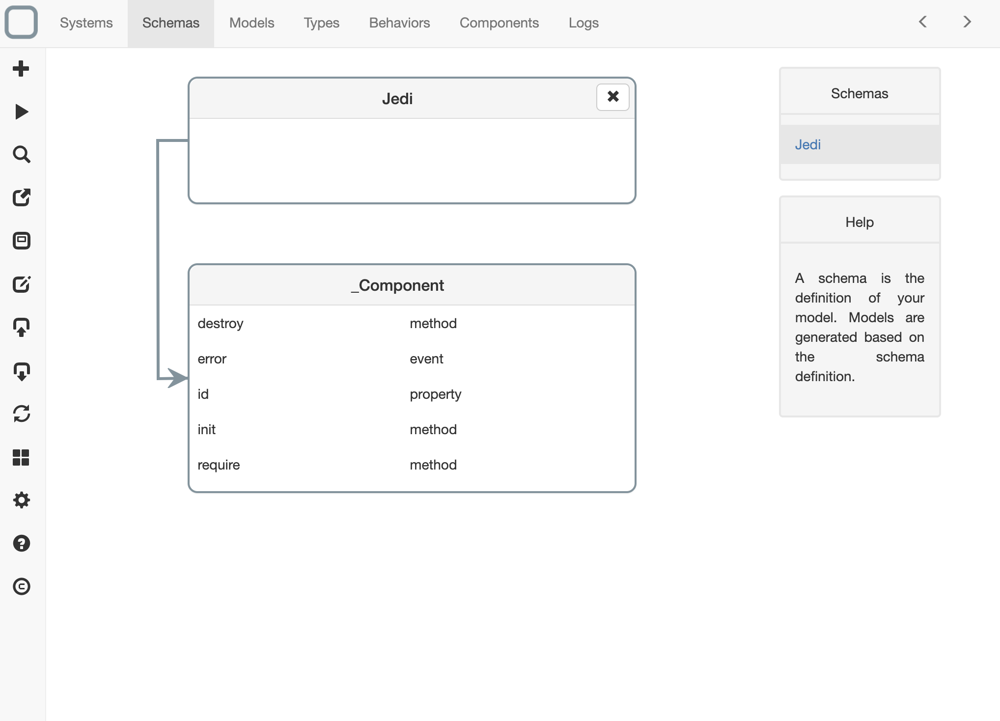
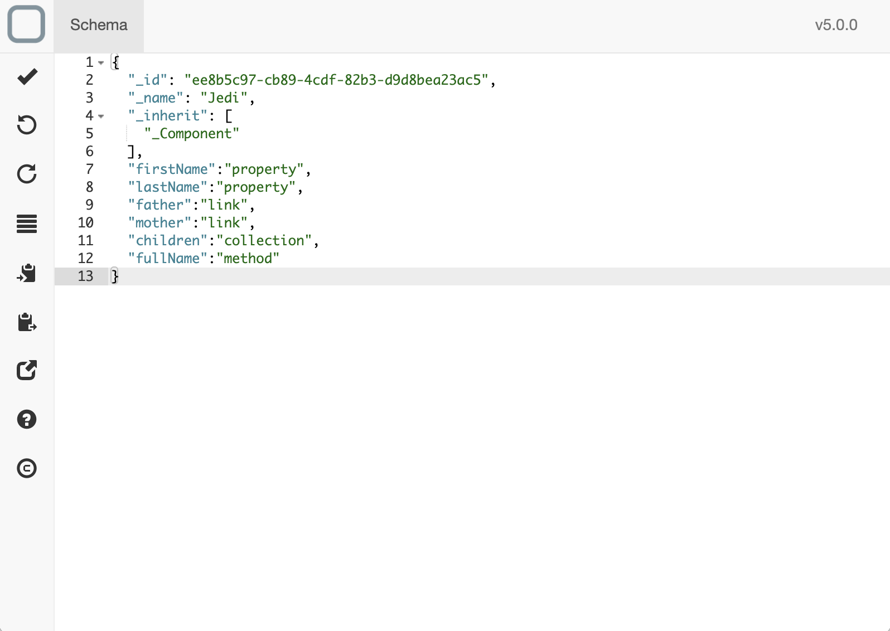
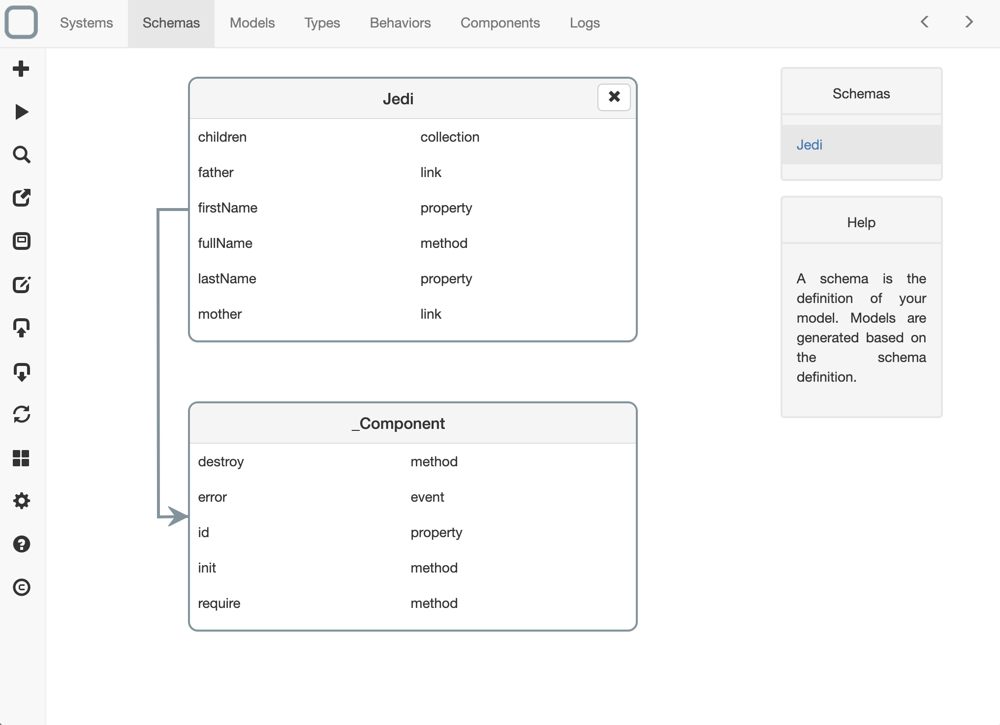

創建一個模式
一個模式可以幫助你定義一個模型。 用相當單純的情報，就可以由模式產生一個模型。 然後你就可以開始編纂一個模型。
創建模式
在 System Designer 上創建模式
- 點擊Schemas 頁,
- click on the '+' button on the left toolbar,
- 輸入你要創建的模式名稱
- then click on Create button,
- 一個新的模式就此創建完畢。你將可以看到它出現在Schema 一覽中:

修改模式
- 點擊你所創建完的模式，
- 編輯器會切換至模式詳情編輯頁，
- 然後你就可以編輯你的模式了:

- 點擊回到Schemas 頁,
- 設定已經成功更新。

定義繼承
如果你要為兩個模式加上繼承關係，你需要填入 _inherit 特性到你的模式中。 這個特性須填入數組。你可以定義多個繼承關係。
{
"_id": "ee8b5c97-cb89-4cdf-82b3-d9d8bea23ac5",
"_name": "Jedi",
"_inherit": [
"Person"
]
}
定義實例特性
寫入一個 key 名並在值裡寫入 property 。這個 key 就是你追加的特性名。
{
"_id": "ee8b5c97-cb89-4cdf-82b3-d9d8bea23ac5",
"_name": "Jedi",
"name": "property"
}
定義連結
寫入一個模型名作為 key，然後在值裡寫入 link 。 為模型定義一個1對1的連結關係。
{
"_id": "ee8b5c97-cb89-4cdf-82b3-d9d8bea23ac5",
"_name": "Jedi",
"father": "link"
}
定義一個新的子要素(集合)
寫入一個子要素名(集合)作為 key，然後在值裡寫入 collection 。 子要素可以是:
- 物件。 (example: adresse, ...) or
- 子模型。 (i.e. 模型中如果是一對多的情況，就將子要素定義為 collection).
{
"_id": "ee8b5c97-cb89-4cdf-82b3-d9d8bea23ac5",
"_name": "Jedi",
"children": "collection"
}
定義方法
寫入一個方法名作為 key，然後在值裡寫入 method 。
{
"_id": "ee8b5c97-cb89-4cdf-82b3-d9d8bea23ac5",
"_name": "Jedi",
"fullName": "method"
}
定義事件
寫入一個事件名作為 key，然後在值裡寫入 event 。 所謂的事件，是一種異步方法。
{
"_id": "ee8b5c97-cb89-4cdf-82b3-d9d8bea23ac5",
"_name": "Jedi",
"statusChanged": "event"
}
想知道更多？
如果你想要知道更多關於模式的記法，前往 System Runtime 文檔.